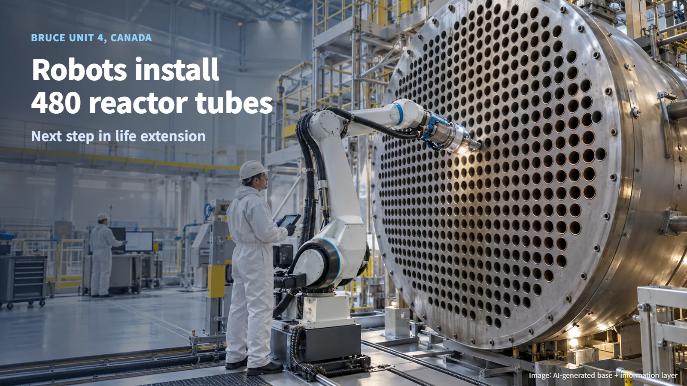
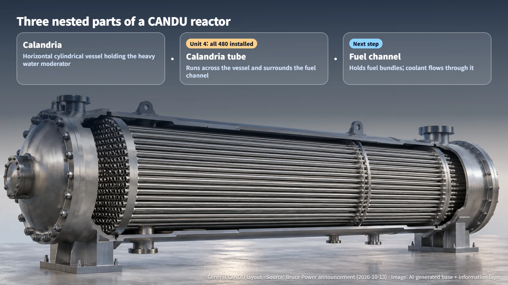
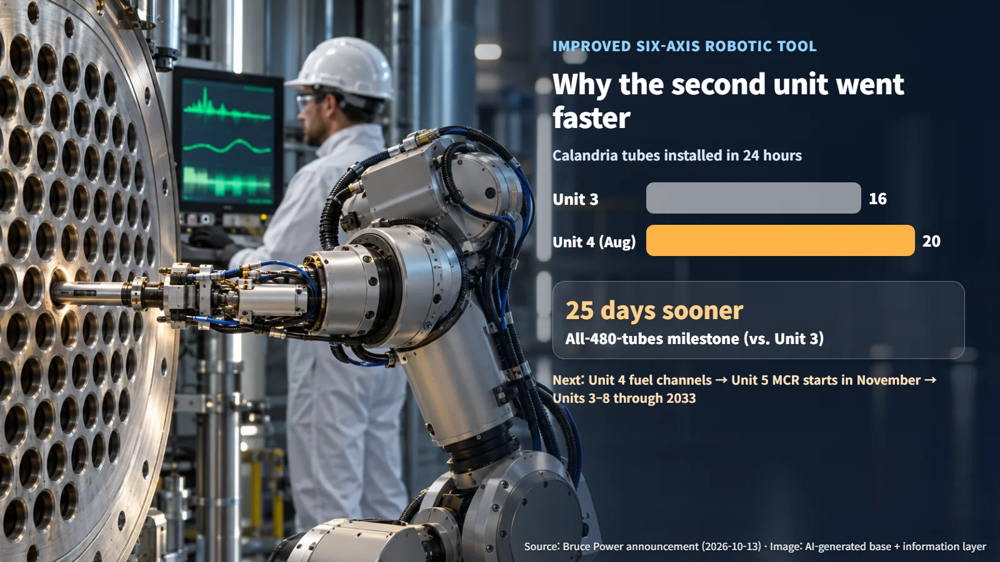

Canada · Refurbishment
Robots Install 480 Reactor Tubes: Inside the Bruce Unit 4 Refurbishment
An improved six-axis robotic tool helped Bruce Unit 4 finish all 480 calandria tubes 25 days sooner than Unit 3; fuel channel installation comes next.
How does a nuclear plant that has run for decades get ready for many more years of service? When people hear that the core components inside a reactor are being replaced, many picture workers assembling each part by hand. At Canada's Bruce nuclear station, robotic tooling sits at the center of that work. On October 13, Bruce Power announced that it had completed the installation of all 480 calandria tubes in the Major Component Replacement (MCR) project on Bruce Unit 4. Major Component Replacement is a project that renews a reactor's key components to extend the plant's operating life. Let us look at what these tubes are and what the robots actually did.

What a Calandria Tube Is: The Tube Around the Fuel Channel
The Bruce station uses CANDU reactors, the Canadian pressurized heavy water reactor design. At the heart of a CANDU reactor is a large cylindrical vessel called the calandria, lying on its side and filled with a heavy water moderator. A moderator is a material that slows down the fast neutrons released by fission so that the next fission happens more readily, and heavy water is water whose hydrogen is the heavier isotope.
The calandria tubes are the tubes that run horizontally across the calandria. Each calandria tube holds a fuel channel. The fuel channel is the passage where fuel bundles sit and where coolant flows to carry heat away. The calandria tube surrounds the fuel channel from the outside and forms the boundary between the fuel channel and the moderator around it.
An analogy helps. Picture the calandria as a large tank of water, each calandria tube as a sheath running through that tank, and each fuel channel as a sword that slides into its sheath. A life-extension project first fits the new sheaths, then inserts the swords inside them. What Unit 4 has just finished is the sheath step: fitting all 480 calandria tubes.

What the Robotic Tool Does
The calandria tubes were installed with a six-axis robotic tool. A six-axis robot has six rotating joints, which lets it change position and angle freely, much like a human arm. The tool was first used on the Unit 3 project, and an improved version built on that experience was deployed on Unit 4.
According to Bruce Power, the tool works from both faces of the reactor. It first places an insert inside the tube, then expands the joint to a target diameter. Expansion pushes the tube outward from the inside so that it presses tightly against the mating surface. The result is a firm, leak-tight joint, and micro-measurements taken during the work confirm that each joint meets its specified dimensions.
The defining picture of this work is robotic arms on both sides of the reactor gripping the tube ends and expanding and securing each joint, one at a time. Precision and repeatability are what allow the same quality to be delivered across all 480 tubes. Bruce Power, Shoreline Power Group, ATS Automation and Calian Engineering took part in the tool's design, testing, training and functional implementation, and the company says this collaboration delivered the precision and repeatability the work requires.
Why the Second Unit Went Faster
Calandria tube installation on Unit 4 finished 25 days sooner than the same milestone on Unit 3. The speed gain also shows up in the daily records. In August, crews installed 20 tubes in 24 hours, surpassing the Unit 3 record of 16.
Repetition is the foundation of this gain. Bruce Power says it improved the robotic tool first used on Unit 3, together with the working experience built up there, and applied both to Unit 4. When the same process is carried out again on the next unit, lessons from the earlier unit flow directly into the tooling, the work sequence and crew training.

Put together, the Unit 4 pace comes from three things working in combination: the improved six-axis robotic tool, precise measurement that checks quality during the work itself, and a skilled workforce with experience gained on Unit 3. As a life-extension program moves from unit to unit, the experience from each unit becomes an asset that shortens the schedule of the next.
Next Steps: Fuel Channels and Unit 5
With calandria tube installation complete, Unit 4 now moves into the fuel channel installation phase. In terms of the earlier analogy, it is time to slide the swords into the newly fitted sheaths. Once the fuel channels are in place, the passages for fuel bundles and coolant will be ready.
Work on the next unit is also being prepared. Under the company's plan, the MCR on Bruce Unit 5 is scheduled to begin in November, and the life-extension program for Units 3 to 8 continues through 2033. Bruce Power plans to carry the process improvements refined on earlier units into the units that follow. On Unit 5, the points to watch are how far the robotic tool is applied and how the experience of Units 3 and 4 shapes crew training.
Replacing the core components of an older nuclear plant means repeating the same task hundreds of times with great accuracy. With robotic tools, precise measurement and skilled crews working together, that repetition becomes faster and more reliable with each unit. The 480 tubes in Bruce Unit 4 show nuclear life extension as a process that keeps improving as experience accumulates.